- 1/r single line:
This field is the electric field around an infinitely long line of
charge. It is inversely proportional to the distance from the line.
This is a two-dimensional cross section of a three-dimensional field.
In three dimensions, the divergence of this field is nonzero; but in
this cross section, the divergence is zero everywhere except the
origin. (It is important to realize that the two-dimensional
divergence of a field can be different than its three-dimensional divergence.)
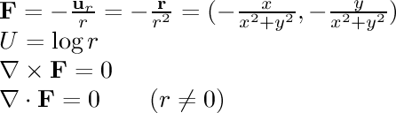
- 1/r double lines:
This is the field around two infinitely long conductors. The distance
between them is adjustable.
- 1/r^2 single:
This field is associated with gravity and electrostatic attraction.
The gravitational field around a planet and the electric field
around a single point charge are similar to this field.
The field points towards the origin and is inversely proportional
to the square of the distance from the origin.
This is a two-dimensional cross section of a three-dimensional field.
In three dimensions, the divergence of this field is zero except at
the origin; but in
this cross section, the divergence is positive everywhere (except at the
origin, where it is negative).
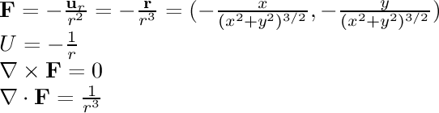
- 1/r^2 double:
This field is associated with gravity and electrostatic attraction.
The gravitational field around two planets and the electric field
around two negative point charges are similar to this field.
The separation of the two centers is adjustable.
- 1/r rotational:
In this field, the particle is being pulled in a circle around the
center. The speed of its motion is inversely proportional to its
distance from the line. This is the magnetic field of an infinitely
long current-carrying wire.
The divergence of this field is zero everywhere as we would expect
for a magnetic field. Surprisingly, the curl is also zero everywhere
except at the origin,
even though the particles are clearly moving in a circle. To see why,
set the particle movement to "Curl Detectors". You can see that even
though the particles are moving in a circle, the particles themselves
are not turning. This is because the force on the far side of the
particles (the side away from the center) is slightly weaker than
the force on the near side; this is just enough to cause the particles
to turn slightly in the opposite direction of the force. This
counterbalances the rotation caused by the circular motion of the
particles. So, the particles remain pointed in the same
direction as they go around in a circle.
Since the curl is nonzero at the origin, we cannot come up with a potential
function for this field.
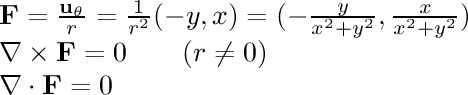
- 1/r rotational potential:
This field is an attempt to represent the inverse rotational field
using a potential. Because of the discontinuity at the center,
this is the best we can do. We come close to the inverse rotational
field except that there is a line at the top which the particles
cannot cross.
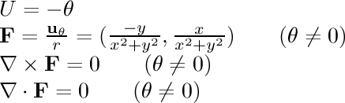
- 1/r rotational double:
Here we have two centers of rotation, with an adjustable distance
between them.
- 1/r rotational double + ext:
Same as above, but a constant external field is added in.
The strength and angle of the external field is adjustable.
- 1/r rotational dipole:
Here we have two centers of rotation, with rotation in
opposite directions, with an adjustable distance between them.
- 1/r rotational dipole + ext:
Same as above, but a constant external field is added in.
The strength and angle of the external field is adjustable.
(In fluid dynamics this field is called the
Lamb
dipole.)
- one direction:
This is a very simple field where the field vectors are pointing
in the same direction everywhere with the same magnitude.
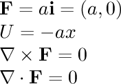
- 1/r^2 sphere:
This field is associated with gravitation.
Consider the gravitational field around a planet.
Outside the planet, the field acts as if the planet were a point
mass; the field is inversely proportional to the square of the
distance from the center of the planet. Inside the planet, the
field is linear to the distance from the center of the planet.
Outside the planet:
Inside the planet (radius = a):
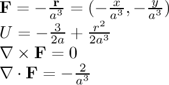
- const radial:
In this field, the particle is being pulled towards the center
with a constant force no matter where it is. I am not aware of
any real physical force that behaves like this, but if there were
one, this is what it would look like.
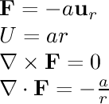
- linear radial:
In this field, the particle is being pulled towards the center
with a force proportional to its distance from the center, similar
to the force on an object attached to a spring. This force
looks more interesting when Display: Particles (Force) is
used instead of a velocity field.
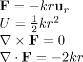
- constant to y axis:
In this field, the field vectors are pointing
towards the y axis with the same magnitude everywhere.
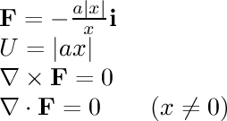
- linear to y axis:
The field vectors are pointing
towards the y axis with a force proportional to the distance
to that axis.
This force
looks more interesting when Display: Particles (Force) is
used instead of a velocity field.
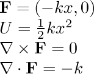
- 2-dimensional oscillator:
There is a force
towards the x axis proportional to the distance
to that plane, as well as a similar force
towards the y axis. The relative strength of the two
forces is adjustable.
This force
looks much more interesting when Display: Particles (Force) is
used instead of a velocity field; in that case, the particles
trace out
Lissajous figures.
These are easier to see after hitting the Reset button, or when
using a small number of particles.
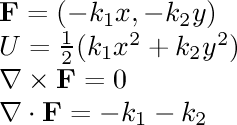
- inverse to y axis:
There is a force
towards the y axis inversely proportional to the distance.
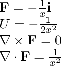
- 1/r^2 rotational:
In this field, the particle is being pulled in a circle around the
center. The speed of its motion is inversely proportional to the
square of the distance from the center.
The curl of this field is nonzero everywhere as we might
expect for a field that causes particles to rotate. However,
note that the curl is negative everywhere (except at the center);
this means that the
curl vector is in the negative z direction, which implies clockwise
movement. This is surprising, since the particles are clearly
moving counter-clockwise. To see why this is,
set the particle movement to "Curl Detectors". You can see that even
though the particles are moving counter-clockwise, the particles themselves
are turning very slowly in a clockwise direction.
This is because the force on the far side of the
particles (the side away from the center) is weaker than
the force on the near side; this is enough to cause the particles
to turn slightly in the opposite direction of the force. This
more than makes up for the counter-clockwise
rotation caused by the motion of the particles.
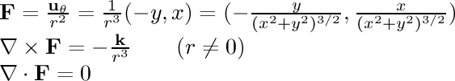
- linear rotational:
In this field, the particle is being pulled in a circle around the
center. The speed of its motion is directly proportional to the
distance from the center.
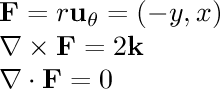
- constant rotational:
The particle is being pulled in a circle around the
center. The speed of its motion is fixed.
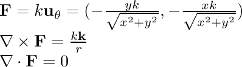
- (y,0):
In this field, particles far from the x axis are moving faster than
those close to it. Even though the particles are not moving in a
circle, this field has a negative curl everywhere, which means
clockwise rotation. Set the particle movement to "Curl Detectors"
to see this. For each particle, the force on the upper
side is stronger than the force on the lower side, causing the particle
to rotate clockwise. The particles themselves do not move in a circular
path because the force has no y component.
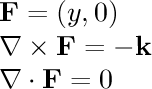
- (y^2,0):
In this field, particles far from the x axis are moving faster than
those close to it. Even though the particles are not moving in a
circle, this field has curl everywhere except on the x axis.
Set the particle movement to "Curl Detectors"
to see this. For each particle above the y axis, the force on the upper
side is stronger than the force on the lower side, causing the particle
to rotate clockwise; the effect is the opposite below the y axis.
The particles themselves do not move in a circular
path because the force has no y component.
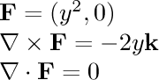
- saddle
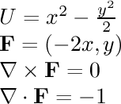
- rotation + expansion
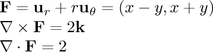
- (x^2-y,x+y^2)
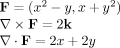
- (x+y^2,x^2-y)
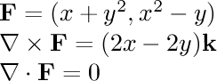
- (x,x^2)
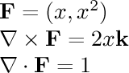
- u=x^2+y
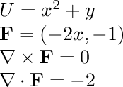
- pendulum potential:
Consider a pendulum which is free to move in both the x and y direction.
We can describe its position using the angle it makes with the positive
x axis (theta) and the angle it makes with the x-y plane (phi).
Its potential energy is determined by its height, which is equal to
h-l cos(theta) cos(phi) where l is the length of the pendulum and
h is the height of the support it is attached to.
If we replace theta with x and phi with y, then we can graph the
potential energy, and we can treat the force on the pendulum
as a vector field, and see how particles act when placed in the
vector field.
In this demonstration, the angles range from -pi to pi (-180 to 180). The
center of the graph is when both angles are zero and the pendulum
is at rest. If you
set the particle movement to "Force", you can see the particles swing
back and forth like a pendulum would. You can see this better if you
set the number of particles to a small number.
If you set the floor
colors to "Potential", you can see a white line around the center
red area; this is the point where one or both of the angles is at 90
degrees; in this case the pendulum is at the same height as its support
and it doesn't matter what the other angle is. In the green areas,
the pendulum is actually above its support.
Sometimes the particles
manage to make it over the top of the hills on either side; this
corresponds to a pendulum swinging up and over the top.
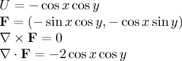
- sin(r^2)/r^2
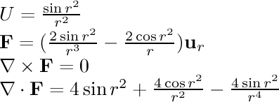
- user-defined potential: this allows you to enter
an arbitrary potential function into a text box. The field vectors
will be calculated from it. A sample potential is x*x-y*y,
which is a saddle potential. Here are some other sample expressions,
to give you an idea of the input format:
x+y
-x^2+5.2*y
2*sin(x)+3*y
1000/(r^2)-5*y
abs(x)
exp(2*log(x+10))+sqrt(y+10)
After entering a new potential, press return so that the change
takes effect. If nothing happens, then the field may be too weak; either
increase the field strength, or multiply the field by a large constant.
If particles jump around randomly with no apparent pattern, the field
may be too strong.
Each coordinate ranges
from -10 to 10, so the edges of the view are at (±10,±10).
The center of the view is the origin.
- user-defined field: this allows you to enter
an arbitrary field into text boxes (one for each coordinate).
If you try to enter some of the predefined fields (like (x,x2))
keep in mind that the fields will not appear exactly the same,
because many of the predefined
fields have a constant scaling factor that isn't reflected in the name
of the field.